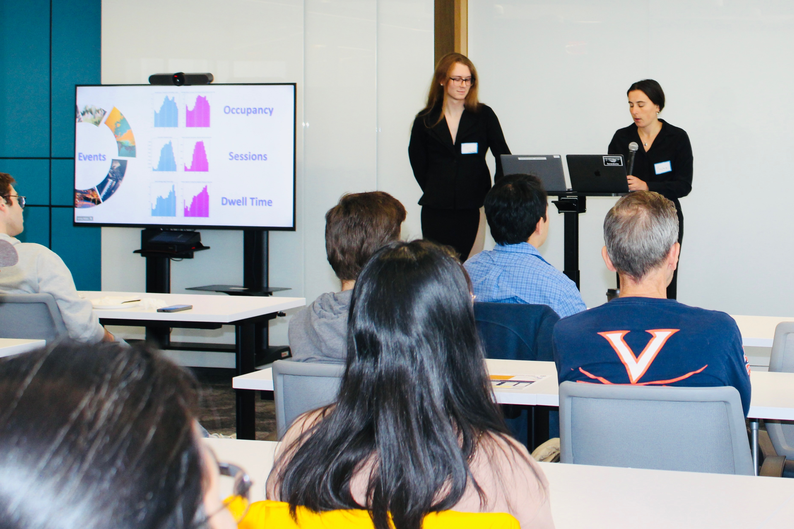
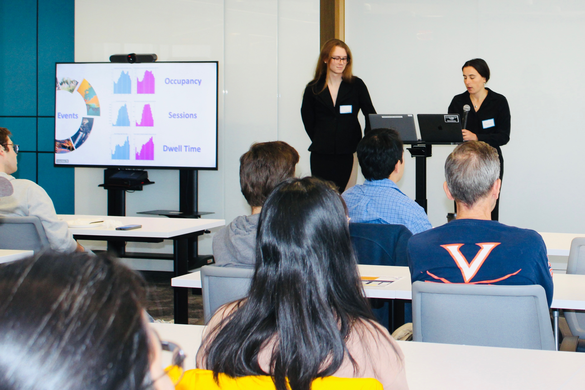

Sophia Rutman
Welcome to my personal website!
My Resumt:
My resume
My Linkedin:
My Linkedin
My projects
Sports Betting and Tribal Gambling Project Website
Capitol to Capital: Using Lobbying Data as a Technical Indicator Github Page
Creating a Batting Order Github Page
Conferences
International Conference for Interactive Digital Storytelling
Link to presentation: Presentation
Link to paper: Published Paper
Code the Curb
 
